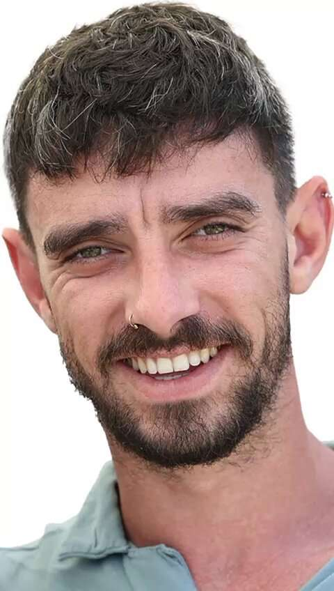

אריאל קוניו
אריאל נחטף מקיבוץ ניר עוז שבו גדל יחד עם בת זוגו בחמש השנים האחרונות, ארבל יהוד.
הם חזרו זמן קצר קודם מטיול משותף בדרום אמריקה, והתחילו לתכנן את חתונתם.
הכלבה שאימצו רק שבוע קודם, מרף, נורתה למוות בידי מחבלי חמאס.
הוא סיים לימודי מדעי המחשב ועבד כבודק תוכנה.
משפחתו וחבריו מספרים עליו שהוא מאוד אוהב להיות בחברה של אנשים וחיות מחמד, וחובב פסטה. גם דוד, אחיו של אריאל נחטף מקיבוץ ניר עוז.
במסגרת עסקת החטופים, לאחר 52 ימים בשבי, שוחררו שרון אלוני-קוניו ובנותיה, גיסתו ואחיינותיו של אריאל.
אני מחכה לבנים שלי" מסרה סילביה, אמם של אריאל ודוד, לאחר חזרתן של הבנות בשמחה המהולה בעצב.